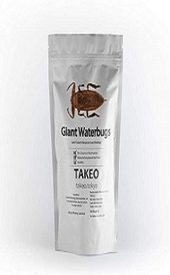

今週のおすすめ商品
- 噛むとカリカリと軽快な音を立て、噛み応え抜群でその音がまた快感となることでしょう。
- テカテカとすぐにでも触りたくなるような見た目をしており、少し食べるまでに時間を用してしまうかもしれません。もしそれで鮮度が落ちてしまいましたら、お取替え可能ですので、ぜひお電話してくだされば幸いです。
- 今ならなんと30%OFF!!この機会にぜひご購入してみてはいかがでしょうか!
←こちらの画像をクリックすると、商品ページに飛ぶことが出来ます。
当店の歴史
当店は、もしも地球の環境が悪化し、今まで通りの生活を送れなくなる時が来るかもしれません。その影響をダイレクトに受けるものは何でしょうか。そう、それは食事です。
地球環境悪化の影響で家畜の飼料を作ることが出来なくなり、そのせいで家畜から摂取できていた栄養を確保出来なくなったり、野菜が育たなくなったりと様々な弊害が起こります。
ただ虫はどうでしょう。虫はある程度の劣悪な環境でも生きる力を持っています。そこから私たちは、食虫という文化を
世に浸透させていこうと考えました。ここから「食虫店」の歴史は始まったのです。